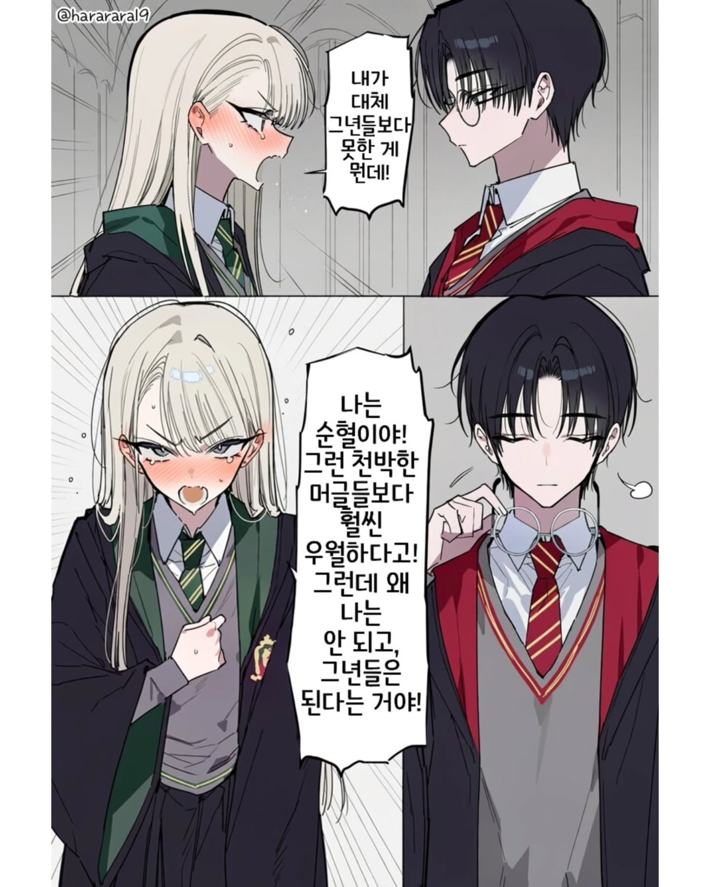
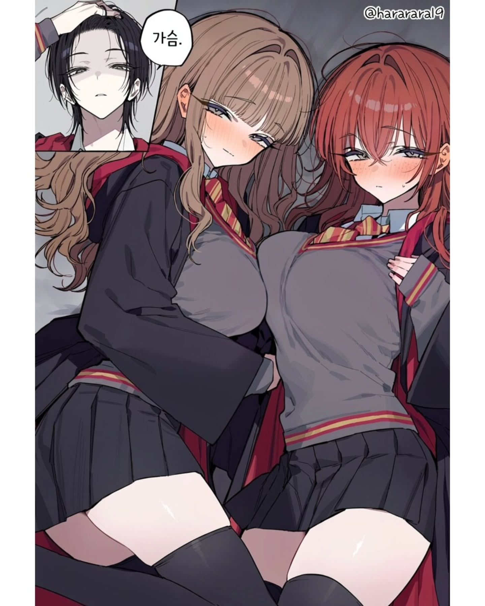

마법사 세계 최고 적폐 가문 위즐리가 보고 머글이라니.
론 씹순혈임
해리더빅페니스포터 이마에 흉터 어디갔냐?
론이랑 허마이오니가 치유해줌
위즐리 가문 개씹순혈인데
헤르미온느 원래 껌딱지인데 뭐야
말포이가 작으면 헤르미온느가 큼
이건 진리

글고보니 헤르미온느가 위즐리가문 최초의 머글인가?
순수혈통의 기준이 위로 6세대인가 그렇고 처음에 순수혈통 가문으로 선정됐을때 위즐리 가문에서 우리 조상중에는 머글도 있었는데 뭔 쌉소리냐 했단거 보면 그냥 기준에 애매하게 걸린듯
잡종이 건강하긴해
이마에 흉터 어디갔어
해리가 아닌거야?
론은 존나 순혈이다.
대적폐 위즐리 가문이 개죠스로 보이나.
론은 개적폐 순혈인데
론은 순혈이다.